Cron expressions will be useful while looking at Apache Airflow scheduling system.
First, we will convert our notebook to a script (reduces dependency on Jupyter, try to find other packages you can get away with not installing). Running the py file locally updates the predictions on BigQuery as expected.
(datasci-dev) ttmac:lec05 theja$ jupyter nbconvert --to script recommend_lightfm.ipynb
[NbConvertApp] Converting notebook recommend_lightfm.ipynb to script
[NbConvertApp] Writing 4718 bytes to recommend_lightfm.py
(datasci-dev) ttmac:lec05 theja$ python recommend_lightfm.py
/Users/theja/miniconda3/envs/datasci-dev/lib/python3.7/site-packages/lightfm/_lightfm_fast.py:9: UserWarning: LightFM was compiled without OpenMP support. Only a single thread will be used.
warnings.warn('LightFM was compiled without OpenMP support. '
<943x1682 sparse matrix of type '<class 'numpy.int32'>'
with 19048 stored elements in COOrdinate format>
<943x1682 sparse matrix of type '<class 'numpy.int32'>'
with 2153 stored elements in COOrdinate format>
1it [00:03, 3.86s/it]
Second, we will create a simple bash script called run_transient_pipeline.sh which has the following content for ease of use:
#!/bin/bash
export GOOGLE_APPLICATION_CREDENTIALS=/model-user.json
python recommend_lightfm.py
Next, we will repeat the steps covered in a previous section to quickly build a docker image. For this, we will need a Dockerfile that installs the appropriate dependencies beforehand.
FROM debian:buster-slim
MAINTAINER Theja Tulabandhula
RUN apt-get update \
&& apt-get install -y python3-pip python3-dev \
&& cd /usr/local/bin \
&& ln -s /usr/bin/python3 python
RUN pip3 install pandas-gbq lightfm==1.15 numpy
RUN pip3 install google-cloud-core==1.3.0 google-cloud-bigquery==1.20.0
COPY recommend_lightfm.py recommend_lightfm.py
COPY model-user.json model-user.json
COPY run_transient_pipeline.sh run_transient_pipeline.sh
RUN chmod +x run_transient_pipeline.sh
CMD ./run_transient_pipeline.sh
We can build the image and then run a container based on this image locally.
(datasci-dev) ttmac:lec05 theja$ docker image build -t "recommend_pipeline" .
.
.
(truncated output)
.
.
(datasci-dev) ttmac:lec05 theja$ docker images
REPOSITORY TAG IMAGE ID CREATED SIZE
recommend_pipeline latest 12a25accc725 36 seconds ago 758MB
(datasci-dev) ttmac:lec05 theja$ docker run recommend_pipeline
<943x1682 sparse matrix of type '<class 'numpy.int32'>'
with 19048 stored elements in COOrdinate format>
<943x1682 sparse matrix of type '<class 'numpy.int32'>'
with 2153 stored elements in COOrdinate format>
(datasci-dev) ttmac:lec05 theja$
As described on wikipedia, cron is a command line service/daemon/program for time based scheduling of programs (python scripts in our case). Its present in many UNIX-like OSs including Ubuntu/CentOS etc.
It is a very useful tool to automate system maintenance (e.g., taking backups) as well as for administration.
Its name originates from the greek word χρόνος (chronos) meaning time.
One of the greatest benefits of using cron is that:
The key limitations of using a cron daemon for scheduling include:
While cron has its issues with respect to how flexible it is in large scale production environments. But it is a great time-tested utility for individual level automation (e.g., scraping, training models repeatedly as we are planning to do etc).
crontab is the command line utility to set up the task schedule (as a user or by root). The task (our python script) is run on the system where cron itself is present, so it is good to ensure all dependencies and logging are in place.
The tasks are run according to the privileges of the user who created the schedule.
We can edit/create a schedule by using the command crontab -e on the commandline (linux/macOS).
Task schedules are expressed in terms of corn expressions.
This is a sequence of 5 numbers that tell the scheduler to run your program periodically. Instead of numbers, characters such as *,-,\ and , are also used. Lets look at an example expression and understand what it does:
1 2 3 4 5 /path/to/mycommand argument1 argument2
In the above, the first entry is the minute index (varying between 0-59), 2nd is for hour (0-23), 3rd for day of the month (1-31), 4th for month (1-12) and 5th for day of week (0 or 7 is for Sunday).
If we need to run a job/task as a system service, then the username also features into the task expression. So the above becomes:
1 2 3 4 5 username /path/to/mycommand argument1 argument2
Example 1: To run a task everyday at 12 minutes past 2pm, our specification would be:
12 14 * * * /path/to/mycommand argument1 argument2
Example 2: If you want a task to be run every month at a certain date (say the 5th and 7th days), then the specification would be:
12 14 5,7 * * /path/to/mycommand argument1 argument2
Example 3: If a task needs to be run every two hours after midnight, then:
12 0-23/2 * * * /path/to/mycommand argument1 argument2
In the above, * specifies all possible values for that field. and - spcifies a range. Similarly, / specifies the jump and , specifies a list.
By default cron will try to email you the outcome of running the command. We can just redirect it to the commandline. For example:
1 2 3 4 5 /path/to/mycommand argument1 argument2 >/dev/null 2>&1
Additional useful commands are:
crontab -l to list the current jobs, andcrontab -r to remove all current job specifications.System jobs are typically listed in the file /etc/crontab or /etc/cron.d/* folders. For example, if you open a terminal into the recommend_pipeline container and install cron, you can see the following output:
root@27cf8d2b2681:/# cat /etc/crontab
# /etc/crontab: system-wide crontab
# Unlike any other crontab you don't have to run the `crontab'
# command to install the new version when you edit this file
# and files in /etc/cron.d. These files also have username fields,
# that none of the other crontabs do.
SHELL=/bin/sh
PATH=/usr/local/sbin:/usr/local/bin:/sbin:/bin:/usr/sbin:/usr/bin
# Example of job definition:
# .---------------- minute (0 - 59)
# | .------------- hour (0 - 23)
# | | .---------- day of month (1 - 31)
# | | | .------- month (1 - 12) OR jan,feb,mar,apr ...
# | | | | .---- day of week (0 - 6) (Sunday=0 or 7) OR sun,mon,tue,wed,thu,fri,sat
# | | | | |
# * * * * * user-name command to be executed
17 * * * * root cd / && run-parts --report /etc/cron.hourly
25 6 * * * root test -x /usr/sbin/anacron || ( cd / && run-parts --report /etc/cron.daily )
47 6 * * 7 root test -x /usr/sbin/anacron || ( cd / && run-parts --report /etc/cron.weekly )
52 6 1 * * root test -x /usr/sbin/anacron || ( cd / && run-parts --report /etc/cron.monthly )
#
Here are a couple of useful websites to interpret the expressions: https://crontab.guru/ and http://cron.schlitt.info/. And wikipedia does a good job laying out the details of expression design.
To get our hands dirty, we can run a simple cron job that appends a word to a file every minute with the specification:
* * * * * echo "hello" >> /Users/theja/cds/mlops/crontest.log
And check that the log file is indeed being written to. (Don’t forget to delete the job after checking this.)
We can run our transient pipeline container (although it is not fetching new data, it is easy to see how it can be integrated with something like BigQuery to read updated training data) every hour using the following entry:
# run every hour on the dot
0 * * * * docker run recommend_pipeline
Note that an application started via cron has no connected terminal, so printing to terminal does not work. So to check that your job is indeed working, you can write something to disk (such as to a log file).
Cron is provided as a managed option by AWS, Google Cloud and others. We can look at GKE for an example of this.
Note that the key difference between previous docker images and the image we created above is that the former was a web server (a flask app) that used a pretrained model/predictions, whereas the latter is only focused on training and generating predictions. Both are complimentary to each other. In fact, the previous container can be triggered to update its predictions/model for serving after the transient training pipeline is completed. And this can be done in a periodic manner.
Lets come back to scheduling the transient training pipeline as a job on GCP.
To do so, lets repeat the steps to upload our docker image to the container registry. This involves the following steps.
First we login via docker using our credentials so that docker can push to the Google container registry.
(datasci-dev) ttmac:lec05 theja$ cat model-user.json | docker login -u _json_key --password-stdin https://us.gcr.io
Login Succeeded
Next we tag our image appropriately to reflect the registry URL and repository name.
(datasci-dev) ttmac:lec05 theja$ docker tag recommend_pipeline us.gcr.io/authentic-realm-276822/recommend_pipeline
(datasci-dev) ttmac:lec05 theja$ docker images
REPOSITORY TAG IMAGE ID CREATED SIZE
recommend_pipeline latest 12a25accc725 13 hours ago 758MB
us.gcr.io/authentic-realm-276822/recommend_pipeline latest 12a25accc725 13 hours ago 758MB
Finally, lets push the image to the container registry. Here is a snapshot when its still uploading.
(datasci-dev) ttmac:lec05 theja$ docker push us.gcr.io/authentic-realm-276822/recommend_pipeline
The push refers to repository [us.gcr.io/authentic-realm-276822/recommend_pipeline]
4e9c256172e5: Pushed
8f8a170d6a46: Pushed
d84f1396f776: Pushed
ae965efd348c: Pushed
0978afbb1068: Pushed
3c1ec82efa99: Pushing [> ] 3.315MB/269.1MB
21b00e3fe1bb: Pushing [> ] 8.079MB/418.4MB
d0f104dc0a1f: Layer already exists
And here is the final result.
(datasci-dev) ttmac:lec05 theja$ docker push us.gcr.io/authentic-realm-276822/recommend_pipeline
The push refers to repository [us.gcr.io/authentic-realm-276822/recommend_pipeline]
4e9c256172e5: Pushed
8f8a170d6a46: Pushed
d84f1396f776: Pushed
ae965efd348c: Pushed
0978afbb1068: Pushed
3c1ec82efa99: Pushed
21b00e3fe1bb: Pushed
d0f104dc0a1f: Layer already exists
latest: digest: sha256:9df0d99623e6408d187736c2b82a748ed30eeb773dffb70dfffe03aaa7113173 size: 1995
We can verify that the container is uploaded by checking the container registry page in the browser.
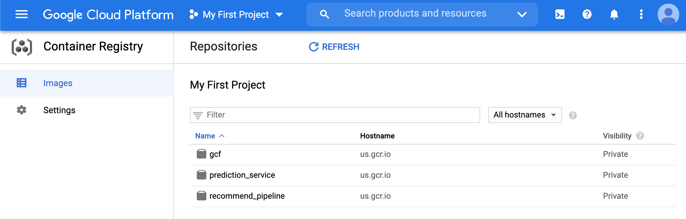
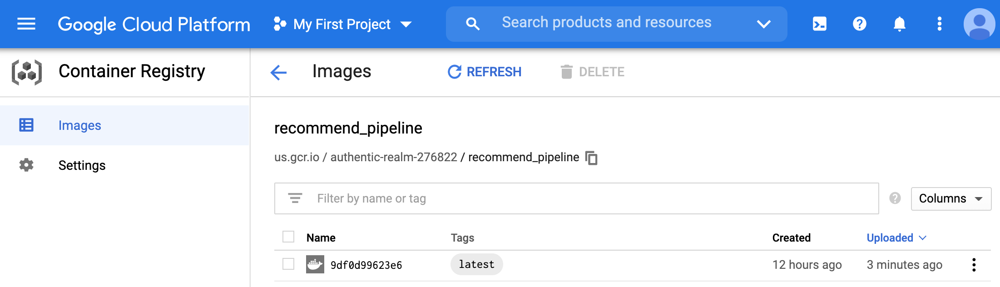
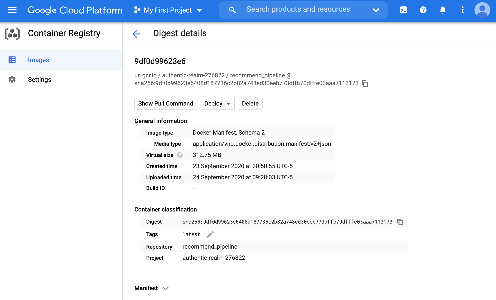
We will now use K8s (GKE) to schedule the image to run periodically.
Note that we are not triggering the python script to run periodically, but creating a new container every time.
This container is downloading the same data in our running example (but it is conceivable how it can be modified to use updated training data).
Lets set up a K8s cluster next. Navigate to the GKE page.
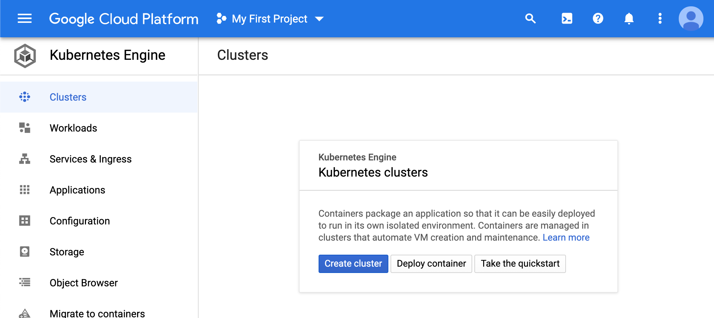
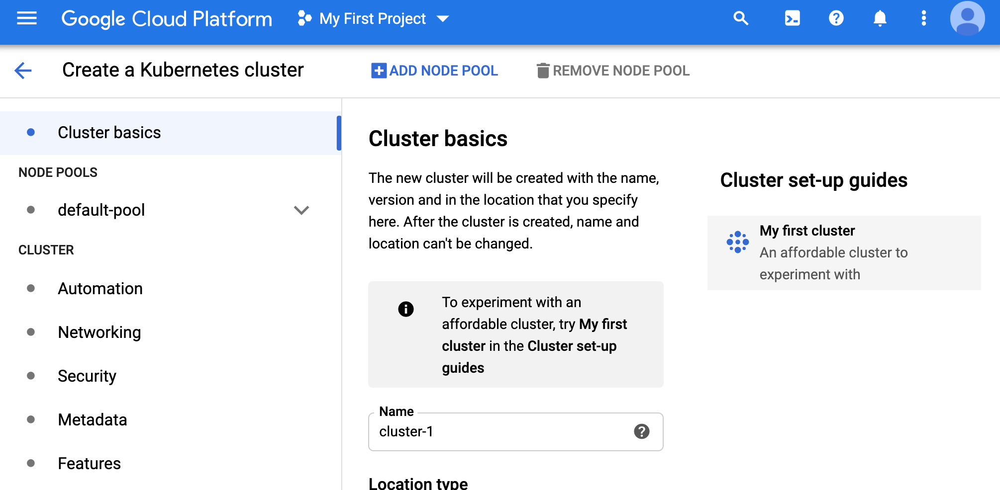
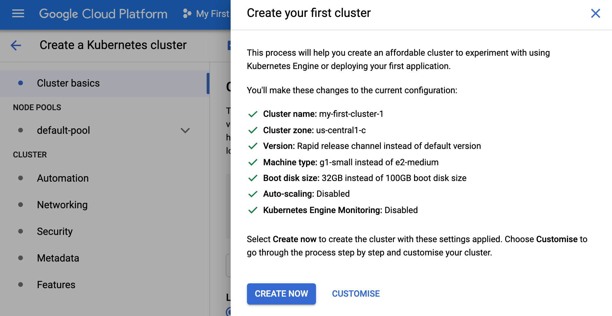
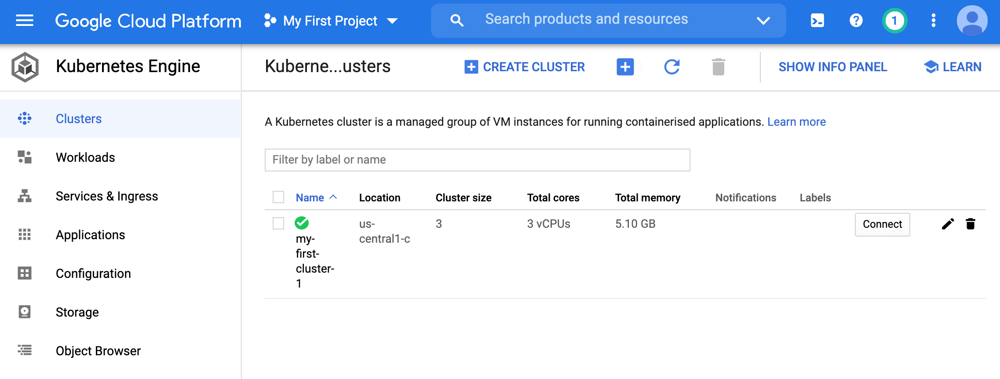
We will use kubectl to manage this cluster (just like we managed the minikube single node cluster).
In particular, we will create a YAML file which will have cron scheduling instructions.
Lets connect to the cluster on the homepage. We can get information of how to connect bu clicking the connect link.
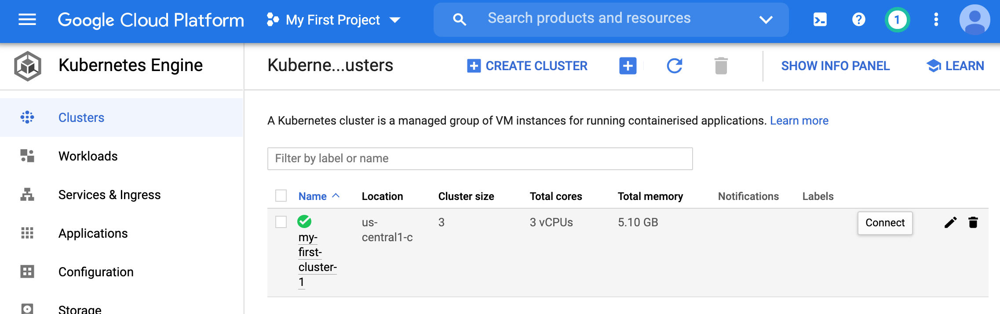
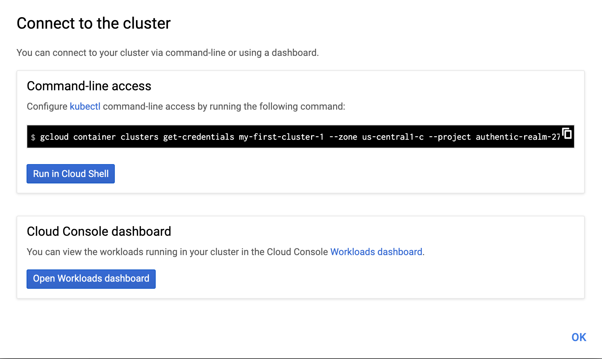
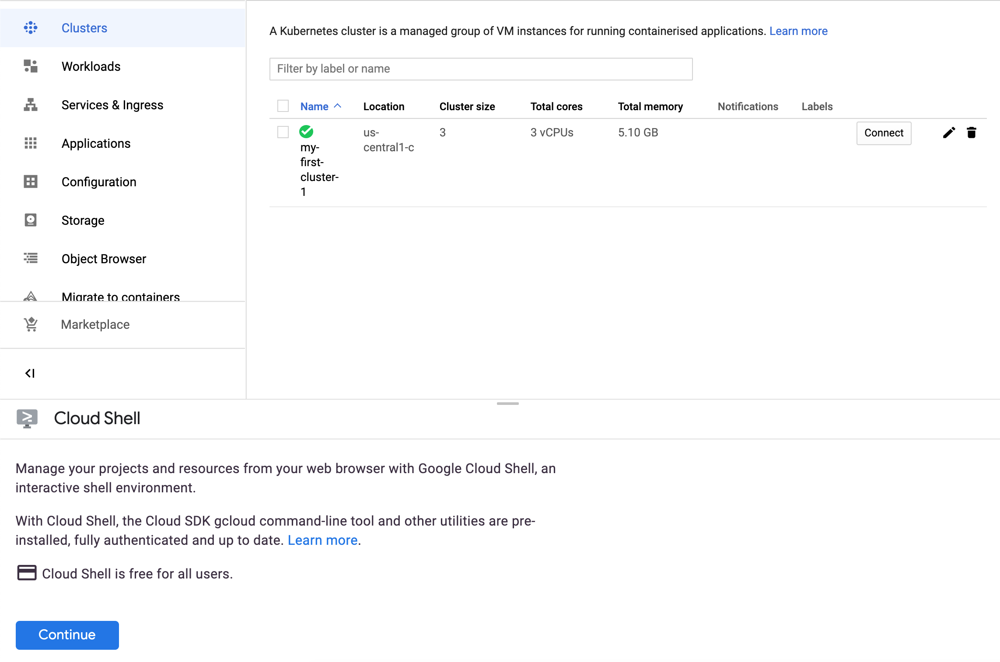
kubectl utility to deploy our recommend_pipeline image.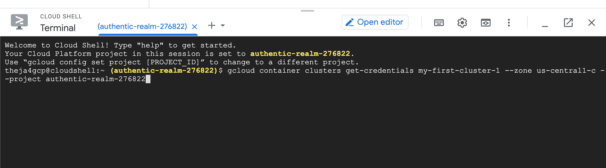
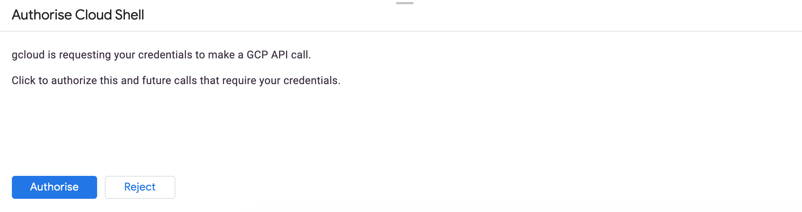
theja4gcp@cloudshell:~ (authentic-realm-276822)$ gcloud container clusters get-credentials my-first-cluster-1 --zone us-central1-c -
-project authentic-realm-276822
ERROR: (gcloud.container.clusters.get-credentials) You do not currently have an active account selected.
Please run:
$ gcloud auth login
to obtain new credentials.
If you have already logged in with a different account:
$ gcloud config set account ACCOUNT
to select an already authenticated account to use.
The cloud shell may then complain about the following when you run gcloud auth login:
theja4gcp@cloudshell:~ (authentic-realm-276822)$ gcloud auth login
Go to the following link in your browser:
https://accounts.google.com/o/oauth2/auth?client_id=32555940559.apps.googleusercontent.com&redirect_uri=urn%3Aietf%3Awg%3Aoauth%
3A2.0%3Aoob&scope=openid+https%3A%2F%2Fwww.googleapis.com%2Fauth%2Fuserinfo.email+https%3A%2F%2Fwww.googleapis.com%2Fauth%2Fcloud-pl
atform+https%3A%2F%2Fwww.googleapis.com%2Fauth%2Fappengine.admin+https%3A%2F%2Fwww.googleapis.com%2Fauth%2Fcompute+https%3A%2F%2Fwww
.googleapis.com%2Fauth%2Faccounts.reauth&code_challenge=Vb_NeTDzREqrM34Aiv-64YwhY44vnz9ahbu0idZ0gQM&code_challenge_method=S256&acces
s_type=offline&response_type=code&prompt=select_account
Enter verification code:
You will use the code generated as below into the cloud shell.
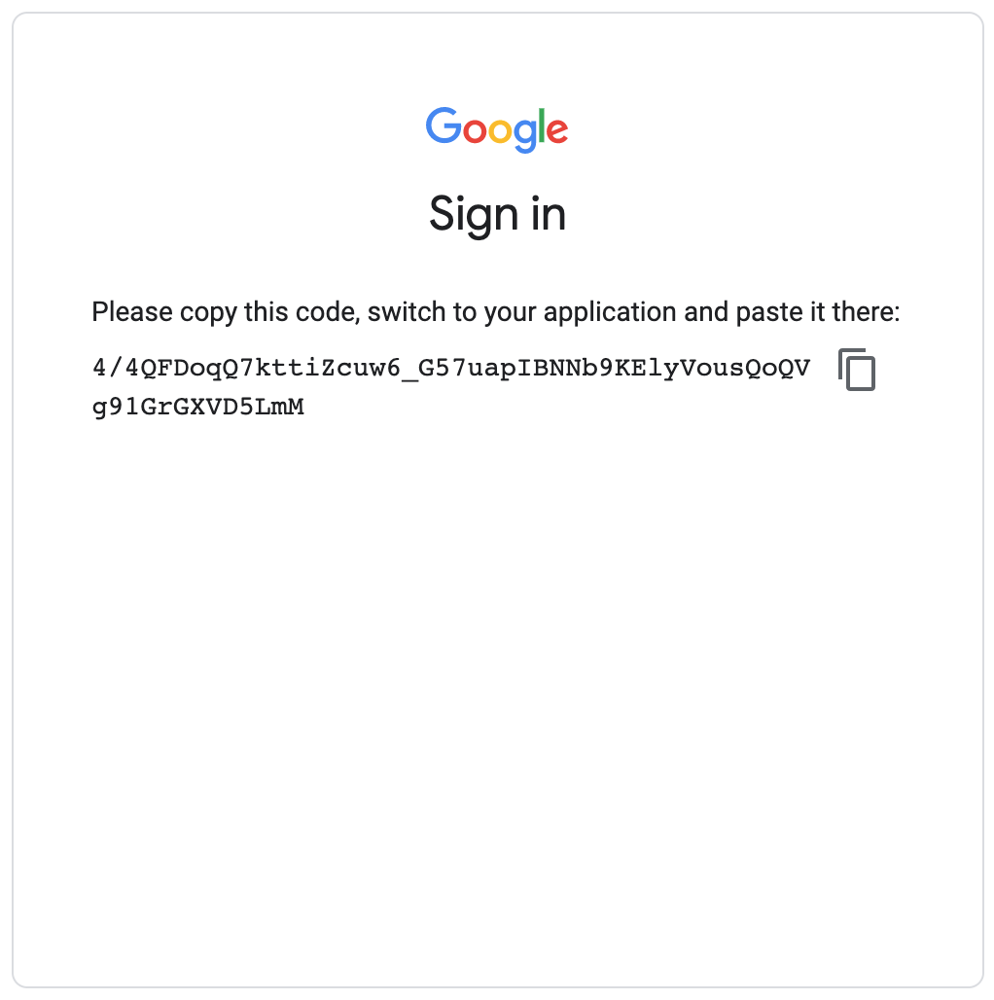
Once entered, you will see the following success message:
You are now logged in as [theja4gcp@gmail.com].
Your current project is [authentic-realm-276822]. You can change this setting by running:
$ gcloud config set project PROJECT_ID
Lets run the original gcloud command that was trying to get the credentials for my-first-cluster again:
theja4gcp@cloudshell:~ (authentic-realm-276822)$ gcloud container clusters get-credentials my-first-cluster-1 --zone us-central1-c -
-project authentic-realm-276822
Fetching cluster endpoint and auth data.
kubeconfig entry generated for my-first-cluster-1.
We can check the kubectl version:
theja4gcp@cloudshell:~ (authentic-realm-276822)$ kubectl version
Client Version: version.Info{Major:"1", Minor:"19", GitVersion:"v1.19.2", GitCommit:"f5743093fd1c663cb0cbc89748f730662345d44d", GitT
reeState:"clean", BuildDate:"2020-09-16T13:41:02Z", GoVersion:"go1.15", Compiler:"gc", Platform:"linux/amd64"}
Server Version: version.Info{Major:"1", Minor:"18+", GitVersion:"v1.18.6-gke.3504", GitCommit:"ebdafa7ed3984f94e1ab914221bf04b62a5cd
1b8", GitTreeState:"clean", BuildDate:"2020-09-09T02:49:12Z", GoVersion:"go1.13.9b4", Compiler:"gc", Platform:"linux/amd64"}
Next we will create a yaml file in the current directory (using the vim text editor) in the cloud shell. The file contents are shown below.
apiVersion: batch/v1beta1
kind: CronJob
metadata:
name: recommend-pipeline-deployment
spec:
schedule: "* * * * *"
jobTemplate:
spec:
template:
spec:
containers:
- name: recommend-pipeline
image: us.gcr.io/authentic-realm-276822/recommend_pipeline
restartPolicy: OnFailure
Vim specific keys to use are (i for insert, esc to escape from insert mode, ‘wq’ to write and quit, and ‘q!’ to quit without any modifications if needed).
Once the yaml file is created as shown below, we can deploy the image:
theja4gcp@cloudshell:~ (authentic-realm-276822)$ vim recommend_pipeline.yaml
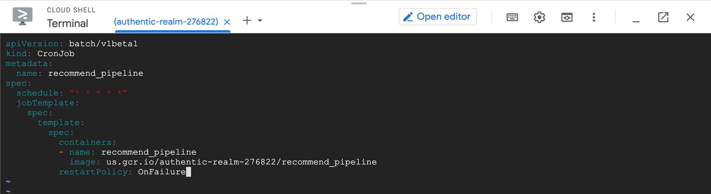
theja4gcp@cloudshell:~ (authentic-realm-276822)$ ls
README-cloudshell.txt recommend_pipeline.yaml
theja4gcp@cloudshell:~ (authentic-realm-276822)$ kubectl get all
NAME TYPE CLUSTER-IP EXTERNAL-IP PORT(S) AGE
service/kubernetes ClusterIP 10.108.0.1 <none> 443/TCP 56m
theja4gcp@cloudshell:~ (authentic-realm-276822)$ kubectl apply -f recommend_pipeline.yaml
cronjob.batch/recommend-pipeline-deployment created
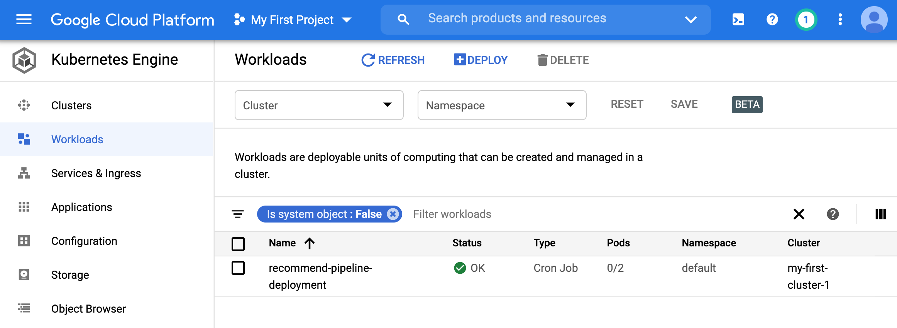
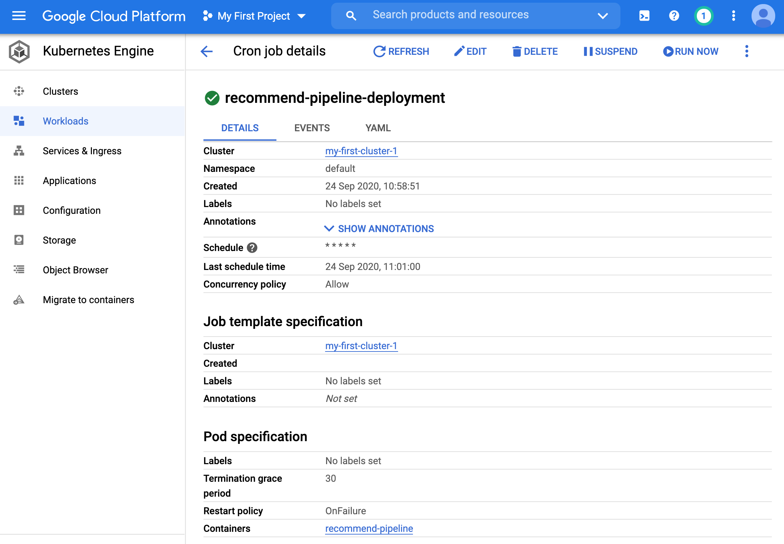
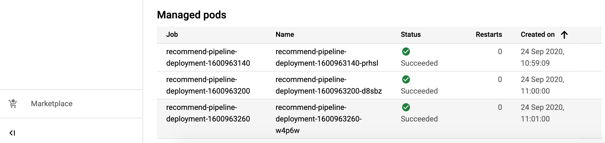
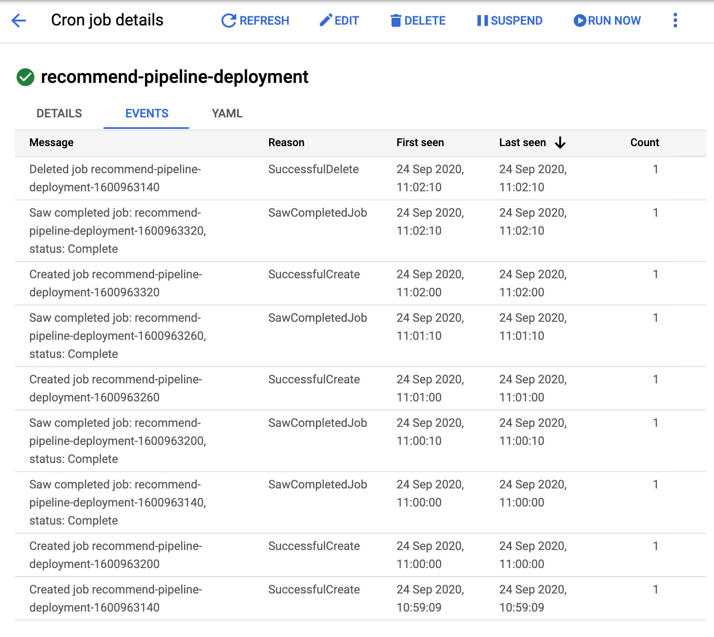
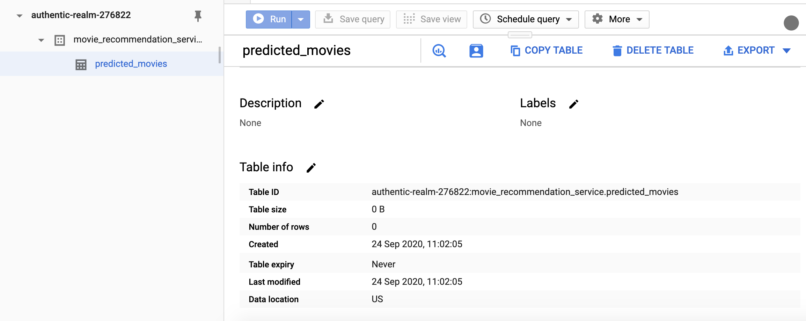
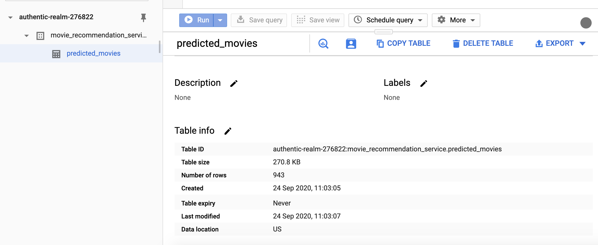
Great, so we have run a cron job on the cloud. A key benefit of doing this on the cloud is fault tolerance.
To wrap up things, we can delete the deployment using the following command:
theja4gcp@cloudshell:~ (authentic-realm-276822)$ kubectl delete -f recommend_pipeline.yaml
cronjob.batch "recommend-pipeline-deployment" deleted
theja4gcp@cloudshell:~ (authentic-realm-276822)$ kubectl get all
NAME TYPE CLUSTER-IP EXTERNAL-IP PORT(S) AGE
service/kubernetes ClusterIP 10.108.0.1 <none> 443/TCP 73m
You can see the deployment getting terminated in the browser as well.
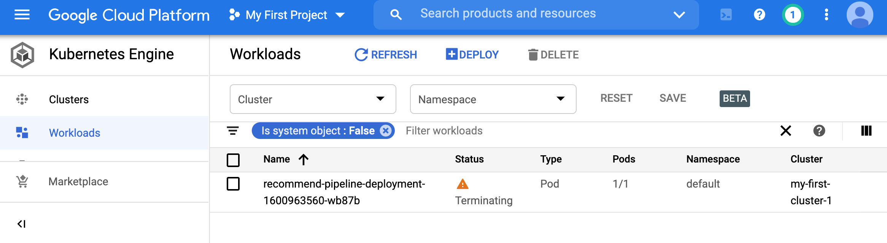
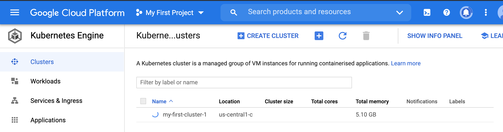